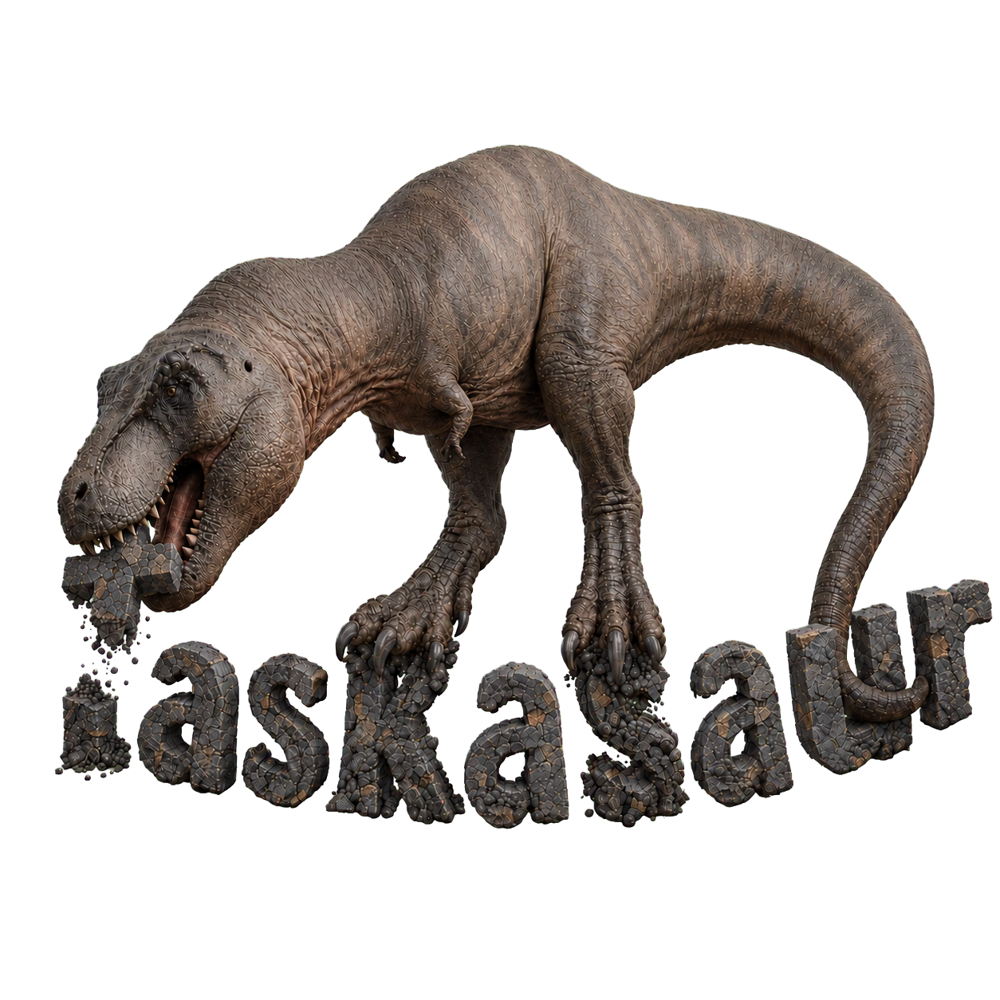

One task interface
Review mail, GitHub issues, Markdown tasks, and internal tasks together instead of managing each source in a different app.

TaskasaurTrack, Tasks, Focus
Taskasaur brings the task systems you already use into a single view, connects them to the time you spend, and helps you protect focused work.
macOS · iOS · Windows · Android · Linux
Review mail, GitHub issues, Markdown tasks, and internal tasks together instead of managing each source in a different app.
Your database is a structured text file. AI tools can read it, reason across it, and act directly on the work without a proprietary data layer.
Keep the CSDB file in the file-syncing service you already use and carry the same task database between desktop and mobile without a required subscription.
Taskasaur organizes your existing sources without demanding that every task look the same. Custom fields let each workflow retain the structure it needs.
Track
Start a live timer or create a session manually. Every field is yours to define: name it, choose its type, make it selectable, set defaults, connect references, or use it to filter the tasks relevant to a session.
Tasks
See internal tasks beside Markdown files, GitHub issues, and linked mail. Change the presentation without changing where the work came from.
 GitHub Issues.mdMarkdown✉Emails✓Internal Tasks
GitHub Issues.mdMarkdown✉Emails✓Internal TasksFocus
Use a preset or custom duration for deep work and breaks. A clear timer, selected task, and configurable completion alert keep the session deliberate.
Data control
Taskasaur uses CSDB: a portable text database format that combines schemas, metadata, and CSV-style table data in readable files you control.
--- csdb
format: CSDB
version: 1
name: my-work
tables:
- sessions
- tasks
--- table:sessions:data
id,start_time,project
…Under the hood
The same React application runs across desktop and mobile surfaces, with native bridges handling files, tray controls, and platform behavior.
Open source
Taskasaur is built in the open. Explore the code, report an issue, improve a workflow, or contribute a new source integration.